来源：https://www.together.ai/blog/road-to-together-compiler
下载／转存日期：2026-11-22。类型：技术博客或文档正文静态快照，不是独立论文PDF。正文代码仅供阅读，未执行。可取得的正文图片与图表另存本地；视频、互动Demo、外部链接以及下载失败的媒体仍需联网。网站运行脚本、登录态、跟踪与评论区未打包。
AI inference is becoming increasingly heterogeneous. New model architectures are released every week, inference traffic shifts across different batch sizes and sequence lengths, and hardware platforms continue to proliferate. Achieving peak performance across all these regimes demands optimization frameworks that can keep up.
Last year, we helped release some of the first AI megakernels, where we executed an entire model forward pass within a single, highly fused GPU kernel. They reached record breaking speeds, but it was difficult to put them in production. After months of effort, we had a grand total of one model, one batch size, and one customer.
This year, we examined what we could simplify and discovered something surprising. With just CUDA Graphs and PDL on top of default Torch Inductor kernels, we could recover 98% of megakernel performance without writing a single kernel. And with “multi-kernels” and agent loops, we could further beat our old megakernels by up to 1.7x, achieving over 1100 TPS for Llama 1B on H100.
For the past two years, we've been investigating what a next-generation system for inference optimization should look like. After building a series of GPU programming and optimization systems, we arrived at Together Compiler, our framework for continual AI inference optimization. In this blog, we'll revisit the assumptions behind today's compilers, share the experiments that challenged our thinking, and explain the lessons that shaped Together Compiler. Our journey spans three parts:
In Part 1, we show that Torch Compile’s heuristics and benchmarking leave performance on the table, providing motivation to build something radically different.
In Part 2, we revisit the megakernels we built to close that gap, explain why they are not always the right optimization target, and decompose their performance gains into simpler primitives.
In Part 3, we share our “bitter lessons” from crafting agent-driven optimization infrastructure and the final production system we ended up with.
For over a decade, PyTorch has been the foundation of AI development,
providing modular, easy-to-use abstractions (nn.Module)
that have enabled rapid experimentation. But this modularity comes at a
performance cost: executing models as sequences of individual operations
can introduce substantial launch overhead, limit opportunities to
overlap computation and memory movement, and leave GPU resources
underutilized. To address these inefficiencies, PyTorch introduced Torch
Compile (“PyTorch 2.0,” powered by Inductor) to optimize and fuse
operations, while NVIDIA developed CUDA Graphs to reduce kernel launch
overhead. These systems have made enormous progress, but substantial
performance gaps remain, often motivating Together’s researchers to
invent specialized implementations such as FlashAttention,
ThunderKittens, and Megakernels.
We start with a brief overview of how Torch Compile works, then present our findings from investigating Inductor’s internals on Llama 1B.
At a high level, Torch Compile uses a just-in-time compilation pipeline to capture PyTorch operations into a computation graph, optimize that graph, and generate executable GPU kernels. The key components are:
ExternKernel), whose implementations are generally opaque
to its fusion machinery.can_fuse() function checks whether a candidate
fusion is legal, while score_fusion() ranks opportunities
using heuristics such as estimated memory traffic savings. The algorithm
repeatedly applies profitable fusions, potentially combining many
operations into a single kernel. However, these decisions are based on
local heuristics rather than a global search over all possible kernel
partitions and execution strategies. For example, Inductor may avoid
fusing operations that share no memory accesses, even when executing
their work together could improve GPU utilization.On our target Llama 1B workload, Inductor delivers 669 TPS. As we’ll show in Part 2, these generated kernels are sometimes enough, and with small modifications, they can reach similar levels of performance to megakernels. However, on different architectures and newer hardware, Inductor’s heuristics can’t keep up. We investigated where Inductor struggles most and present three findings.
Inductor exposes a number of compiler tuning flags that can boost performance. We discovered that even these seemingly simple configurations exposed a surprisingly large and complex search space.
The best optimization depends on the workload. Inductor exposes a freezing flag that tells the compiler that model weights will not change during inference. Knowing this, the compiler can transform the weights ahead of time to make subsequent computations faster. One such transformation converts weights to FP32 to perform certain optimizations, before converting them back to their original, lower-precision format. We found that enabling freezing improved throughput by 10–26% at larger batch sizes, where the GPU performs matrix-matrix multiplications. However, at batch size 1, where inference primarily uses matrix-vector multiplications, enabling the same flag caused a 49% slowdown. Upon inspection, we discovered that the FP32 conversion was not reversed for matrix-vector operations, leaving the GPU to process larger, 32-bit weights instead of the original lower-precision weights. In other words, the exact same compiler optimization could improve performance for one batch size while dramatically degrading it for another.
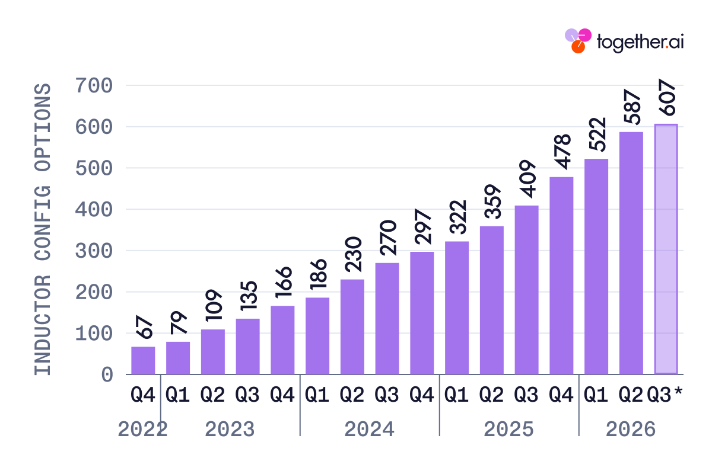
Optimizations interact in unpredictable ways. As of
Q3 2026, Inductor exposes 607 tuning flags, 198 of which were added in
the past year. These flags control everything from kernel fusion to
memory access patterns and scheduling. Their effects are not
independent: enabling the aggressive_fusion flag alone
reduced Llama 1B throughput by 6 TPS, but enabling it alongside the
combo_kernels, benchmark_fusion, and
triton.coalesce_tiling_analysis flags improved throughput
by 3 TPS. Even small configuration changes could produce measurable
microsecond-level differences in execution time.
Takeaway: the space of possible optimizations and configurations is large, and we should be searching it systematically instead of guessing the right flags to set.
Inductor makes optimization decisions based on its benchmarking harness. We identify two distinct ways that this benchmarking misleads its decision, hurting overall performance as a result.
First, it ignores that kernel performance depends on caching behavior. Torch Inductor clears the GPU's L2 cache before benchmarking individual kernels, but during inference, kernels often reuse data that is cached from preceding operations. We observed 39–58% slower timings in Inductor's isolated benchmarks than in the live forward pass, where cache reuse can reduce memory traffic.
Benchmark inputs can also distort cache behavior in the opposite
direction. For example, when benchmarking torch.embedding,
Inductor initializes the tensor of token IDs to zero, causing every
token to access the same embedding vector. For a 64K-token sequence,
this made the kernel 2.1× faster than with random token
IDs, due to artificially high cache reuse.
Second, benchmarking overhead can lead to poor kernel selection. Many decode kernels execute in just a few microseconds, making precise timing essential. We found that Inductor's benchmarking harness reported 2.5 µs for an operation that performed no GPU work, while other measurements exceeded the GPU execution times reported by Nsight Systems by approximately 3.6 µs. This is because the harness includes CPU launch overhead after an L2 cache flush, which results in Inductor recording idle time.
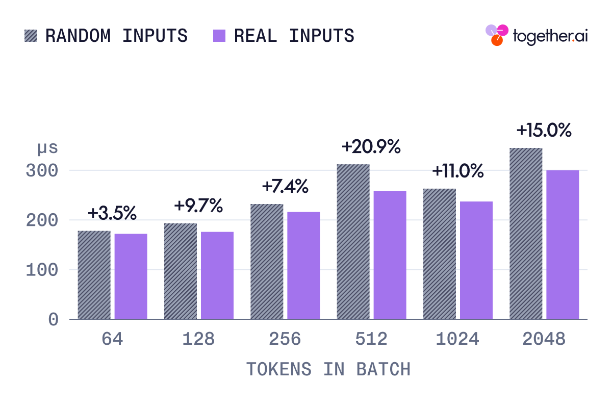
These discrepancies lead to faulty compiler decisions. On Llama 1B's output-projection GEMM, Inductor selected a Triton kernel that ran 7.4 µs versus 6.4 µs for cuBLAS in the live forward pass—a 15% slowdown. We also observe this on modern, data-dependent architectures, such as mixture-of-experts architectures like GLM 5.3, where PyTorch’s default benchmarking can be anywhere from 4-21% slower than if we had modified the benchmark to use realistic inputs for the MoE grouped-GEMM kernel (shown in the figure above).
Takeaway: accurate benchmarking requires taking measurements from inside a real forward pass on real input data.
Inductor’s greedy, pairwise fusion algorithm considers whether two kernels can legally be fused, then evaluates whether fusing them will improve performance. Although repeated pairwise fusion can combine multiple operations, it may miss opportunities that require jointly considering larger groups of kernels or different execution configurations.
We investigated the fusion decisions made by Inductor on Llama 1B and found examples where Inductor keeps kernels separate even when merging them would be beneficial. For example, we found two consecutive kernels (an elementwise activation and a KV indexing kernel) which are simple enough to fuse, but Inductor’s heuristics reject the fusion as they share no memory accesses.
As Inductor evaluates candidates by estimated memory traffic savings, it sees no reason to combine these kernels. However, examining the kernels ourselves, we see that the first kernel launches just six CTAs, meaning that most of the GPU's 132 SMs are idle. Merging these operations into a single launch would help reduce this waste.
Takeaway: an algorithm for kernel fusion should reason about utilization, not just memory.
Each of these findings highlight Inductor limitations that leave the GPU underutilized. Focusing on our broader goal of a next generation system for inference optimization, we turned to the opposite side of the spectrum: megakernels. If we removed compilers entirely, controlling all levels of the stack by hand, where would the performance gains actually come from? By understanding this, we hoped to identify a middle ground, automating megakernel performance with minimal complexity.
Since we introduced Megakernels, they have inspired a growing body of work on next-generation AI compilers and GPU execution systems. In this section, we revisit why we built them, how they work, and what happened when we tried to bring them into production.
What motivated megakernels? We observed three sources of inefficiency in conventional inference engines, which typically execute models as sequences of kernels using frameworks such as Torch Compile and CUDA Graphs:
To address these inefficiencies, we designed megakernels around a single persistent GPU kernel that executes an entire model forward pass. Rather than launching a new kernel for each operation, we kept thread blocks resident on the GPU and scheduled successive operations within them. We used specialized warps to coordinate execution, manage resources such as shared memory, and assign units of work to different SMs. We also divided shared memory into fixed-size pages, allowing operations to dynamically allocate and release shared-memory capacity as execution progressed.
The result was a highly optimized execution system capable of eliminating intermediate kernel launches, overlapping work across operations, and dynamically managing GPU resources. On Llama 1B, our megakernel achieved 990 TPS, a 48% improvement over Inductor’s 669 TPS. But it also required building substantial scheduling, synchronization, and memory-management infrastructure ourselves.
Then we tried putting megakernels into production.
At Together AI, during the latter half of 2025, one of our 🐐research team members spent months wrestling with production inference engines: integrating paged KV caches, porting to Blackwell GPUs, debugging race conditions, and handling the many implementation details that arise outside a controlled benchmark.
And after all that effort, we had a grand total of... one Llama 1B megakernel, supporting one batch size (1), one precision (BF16), and one customer.
The performance was impressive. The flexibility was not.
This experience left us with a question: Were megakernels fast because everything ran inside one giant kernel, or because they enabled a handful of valuable optimizations—eliminating launch overhead, overlapping operations, and balancing work across SMs?
To investigate this, we started from Torch Compile at 669 TPS, and systematically ablated each optimization that megakernels provide, one at a time. We found that with only two NVIDIA primitives and default Inductor generated kernels, we could reach equivalent performance with our optimized baseline. This result is surprising, given that many research groups have built far more complex compilers and megakernel systems that fall short of this target. Ultimately, we discovered that megakernels were the wrong objective for a system to target for two main reasons.
First, eliminating kernel launches and overlapping operations doesn’t actually require a megakernel. Second, varying hardwares and modern model architectures expose the megakernel's rigidity and sub-optimality.
Megakernels provide a clean abstraction to enable fine-grained overlap across compute and memory operations. Achieving this overlap comes down to three main things: minimizing kernel launch overhead, reducing tail effects from idle SMs, and overlapping memory prefetching with computation. We examine each of these in detail below, as well as why a singular persistent kernel is not needed to fully achieve these three objectives.
Launch overhead. Kernel launch overhead is costly. In PyTorch, GPU operations pass through ATen dispatch machinery to select a performant implementation based on input shapes, data types, and layouts. This costs 37 microseconds for a H100 Llama 1B down-projection, which is more than double the kernel’s 15 microsecond GPU execution time alone. Stripping PyTorch out entirely and launching pure C++ still costs around 2 microseconds per launch, which adds up across hundreds of kernels in a typical forward pass.
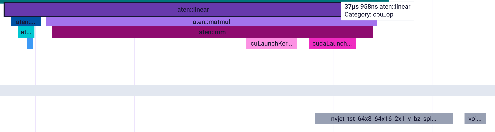
The prescribed solution by PyTorch is CUDA Graphs, a driver-level feature that captures a sequence of GPU operations and replays it with substantially lower CPU launch overhead. In exchange for the captured graph taking up GPU memory, launch overhead reduces to around 1 microsecond. Through this addition, on top of Torch Compile, our Llama 1B performance increases to 864 TPS, 87% of the megakernel.
To further reduce the gap, we explored Programmatic Dependent Launch
(PDL), a CUDA mechanism that allows a subsequent kernel to begin
executing before its predecessor finishes. Conceptually, PDL allows the
hardware to dispatch the next kernel’s thread blocks into SMs as they
become free. At the time, Torch Inductor’s Triton backend did not expose
the PDL controls we needed, so we compiled the generated kernels down to
PTX (NVIDIA's low-level GPU instruction language) and inserted two
instructions: griddepcontrol.launch_dependents at the end
of each producer kernel, and griddepcontrol.wait at the
start of the consumer kernel to ensure synchronization. With these small
modifications, our performance reaches 953 TPS, 96% of the
megakernel.
For both CUDA graphs and PDL, launch overhead is still nonzero. However, we observe that the megakernel doesn’t get rid of these overheads either; it just trades launch overhead for similar synchronization costs inside the kernel.
In the table above, cost is the time from the end of kernel one to after the end of the synchronization primitive (if applicable) in kernel two. For PDL, counting only time between kernels, the actual kernel gap is 577 ns and 516 ns respectively. Interestingly, intra-kernel synchronization is slightly slower on B200 than H100, as B200 is split into two separate dies. Synchronization cost measured on a single die matches the cost for an equivalent number of SMs on H100.
Compute overlap. Wave quantization occurs when work is not evenly divided across a kernel’s SMs, leaving some SMs idle until the slowest finishes. Megakernels can reduce this waste by allowing a CTA that finishes its operation to begin the next instruction immediately, rather than waiting for the full grid to complete. However, this benefit is limited in practice as layers contain inherent serialization points that no kernel structure can remove.
In our Llama 1B H100 megakernel, three of the five producer-consumer barrier edges per layer require a full barrier, and a fourth is effectively full (a single CTA of the secondary kernel is dependent on 128 CTAs of the previous):
This is significant as it means that the majority of compute warps in a layer often cannot go ahead as they must wait on CTAs from the prior instruction to first complete. These full barriers negate persistent kernels benefits, with a full intra-kernel grid synchronization costing the same as launching an entirely fresh kernel. Modifying our old megaprofiler to capture the start and end of compute warps (not just when an SM first enters), we can see how much useful compute work is accomplished ahead of time. Below shows the idealized overlap that megakernels advertise vs. a more realistic representation. Notably, only the attention instruction is able to take advantage of compute overlap.
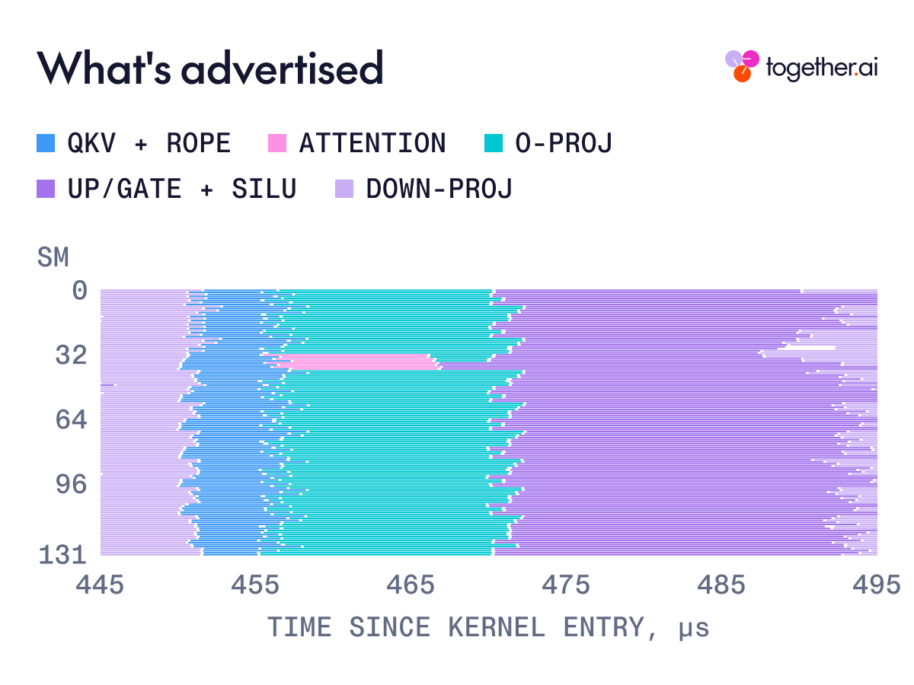
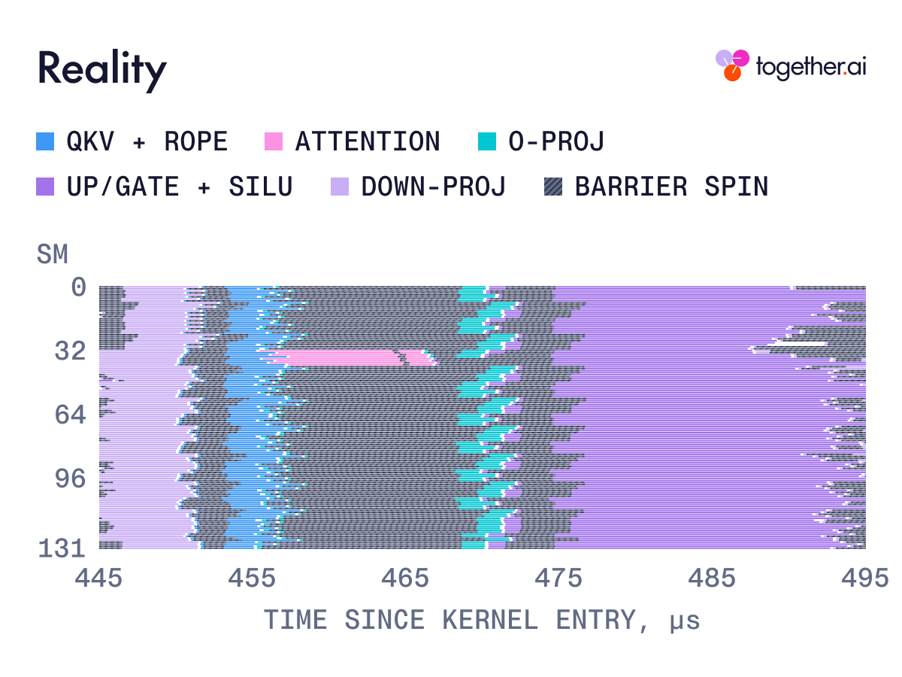
Memory overlap. Our earlier megakernel divided each SM’s shared memory into pages that an instruction releases as soon as it finishes with them, enabling the next instruction to begin prefetching its data into the freed space while the current one completes. However, this optimization is worth only 3.3% of the forward’s full execution. Without any memory preloading, our TPS barely drops from 990 to 961.
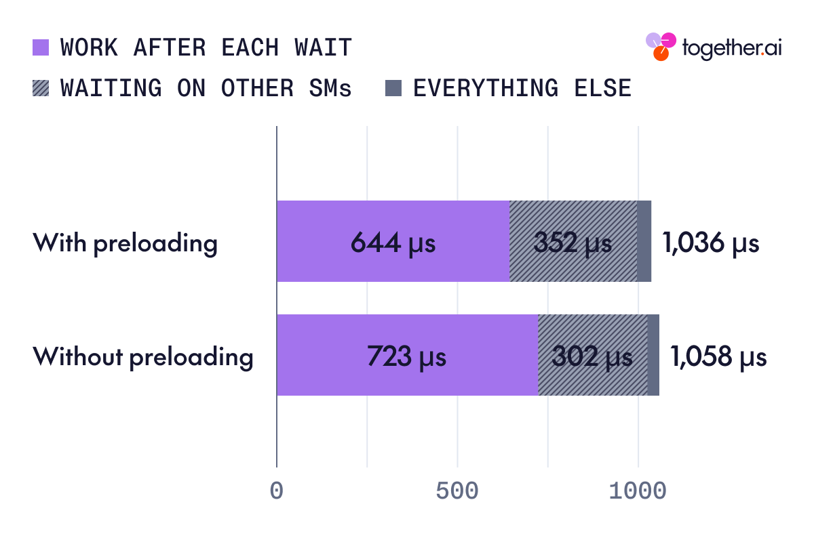
While the benefit is small, we were curious to see if fancy memory
paging mechanisms were necessary to achieve the same degree of memory
prefetching wins. To do so, we further pushed PDL through fine-grained
placement of its instructions. By inserting the
griddepcontrol.wait instruction just before the first read
of the predecessor's output, the consumer kernel can preload weights
while the previous kernel is still computing. This simple approach
enables PDL to recover up to 98% of the gains from paged memory
preloading.
Megakernel style preloading also carries additional costs that PDL avoids. Loader warps that are waiting for the previous operation to complete stay resident on the SM and spin. These polls go through the same SM queue that the computing warps use for their warp shuffles, and when this queue fills, the computing warps stall. In the Llama 1B attention-oproj boundary, oproj’s loader warp spins while it waits for the attention operation to finish, adding 1.3 us of overhead compared to naive PDL.
Early weight preloading can also be pointless. Overlapping memory loads only helps when the producer kernel leaves memory bandwidth idle. At the Llama 1B downproj-QKV boundary, bandwidth is already fully saturated, meaning that loading QKV’s weights early slows down downproj by 2.2us but speeds up the QKV operation by a similar amount. Consequently, this pair takes the same time if launched as two separate kernels without any memory overlap.
Our previous Hazy Megakernel enabled lookahead prefetching beyond the immediate next operation. This allowed the Llama 1B up-projection to begin loading in weights while the oproj and attention ops were still completing. PDL alone cannot do this as it assumes a single stream of execution. However, launching dedicated L2 prefetch kernels can achieve a similar effect.
Putting all of this together, default PyTorch Inductor kernels with CUDA graphs and fine-grained PDL are able to achieve 975 TPS, 98% of the hand-written and optimized megakernel baseline, without writing a singular kernel or any complicated intrinsics. With just CUDA graphs and PDL, each of megakernel’s gains from reduced launch overhead and maximized overlap were individually achievable.
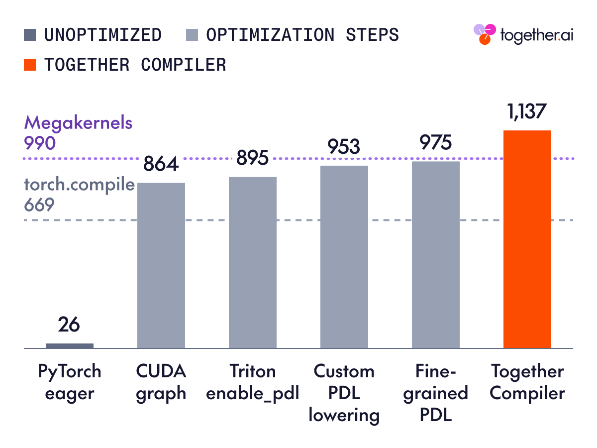
Having shown that simple primitives could recover nearly all of the megakernel’s performance, a broader question remained: are megakernels ever not just unnecessary, but suboptimal? We found megakernels monolithic architecture harmful as hardware resource constraints and modern model architectures require flexible, non-static design choices.
Persistent kernels force hardware tradeoffs Megakernels impose a fixed launch envelope across all instructions, restricting kernel design. From warp count to register budget to cluster shape, all operations must match. Registers are allocated per-CTA at schedule time, out of a 65,536-register file per SM. Our H100 Llama-1B megakernel used 20 warps (16 compute warps plus 4 control warps) as short batch-1 decode instructions finish sooner when their rows are spread across more warps. However, heavier tensor-core GEMMs run best with 12 warps. This is as Hopper’s wgmma accumulates into registers, and above 12 warps, the best tiles no longer fit in register memory. If we were to force this operation into the same 20 warp instruction, the GEMMs perform 1.2-1.5x slower. While this isn’t an issue on Blackwell as tcgen05 accumulates in tensor memory, this is still significant as alternative hardwares like AMD run into the same constraints.
Megakernels also add pressure to the SM’s instruction cache, a small buffer that stores machine code that an SM is actively executing. Packing an entire model into a binary is expensive and produces machine code that is often larger than what the instruction cache can hold. To make space when a new operation begins, the SM evicts the previous operation’s instructions. This adds additional overhead, as the kernel must then refetch the evicted instructions from memory when the same operation later repeats.
Modern architectures don’t fit single envelopes While Llama 1B is a traditional dense-MLP, GQA-based transformer, modern architectures have grown more developed, mixing attention variants, sparse experts, and different parallelism schemes, each with their own preferred launch configuration.
Kimi K3 on Blackwell illustrates this. The model interleaves KDA and MLA layers, which perform best at different cta_group modes for their tensor-core instructions (single-CTA for KDA, CTA-pair for MLA). PTX forbids mixing these two different modes into one kernel, preventing a megakernel from utilizing both kernels at once in their most performant structure.
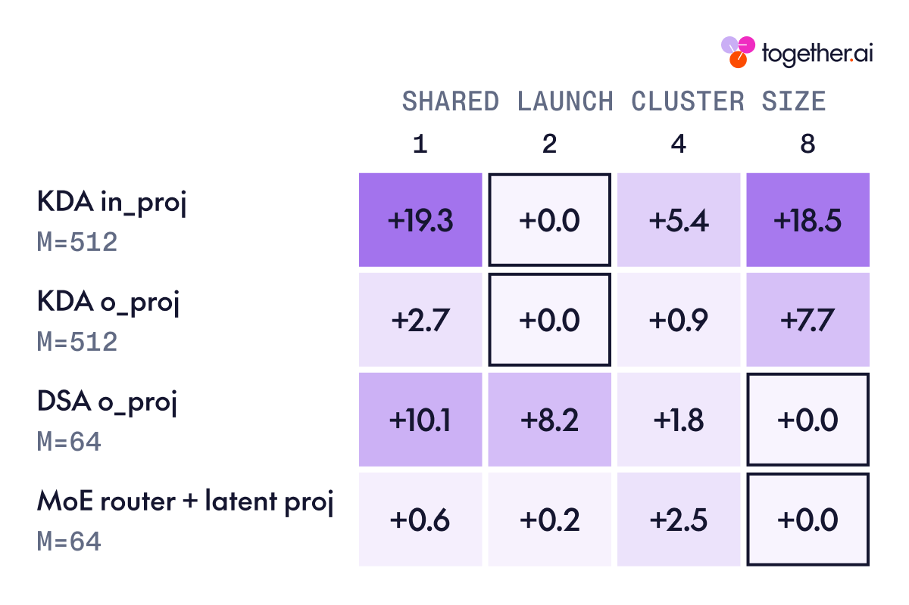
During inference, different kernels may require different parallelism schemes which affects which configurations are ideal. For K3, we sometimes want the MoE GEMMs to run tensor-parallel while attention projections run data-parallel. In such a configuration, the TP GEMMs process 8× more tokens and perform best with a different cluster size than the ADP projections. Forcing both into a single kernel with one cluster size causes a 5–19% slowdown.
Examining open source kernels, we found that splitting operations out of fused kernels were sometimes faster than keeping them together. Under imbalanced expert routing, moving Kimi K3’s expert dispatch onto the GPU’s copy engine outperformed the Mixture of Kitten’s MoE megakernel by 6.9%. Additionally, FlashInfer’s MegaMoE ran 17% faster by factoring out the dispatch into its own small kernel instead of keeping it fused with its GEMM. Fusion for the sake of fusion is not always ideal.
Through these investigations, we realized that while megakernels are fun, they are not always the ideal target. Rather than fusing everything into one persistent kernel, we found that the more important task is to identify the right group of operations to couple and individually tune.
Initially, we built a traditional, rule-based compiler to tackle this problem. It involved substantial manual work, spanning PTX lowering, dynamic programming over fusion decisions, CTA dependency tracking, and fine-grained PDL insertion. However, while this worked for our Llama1B model, we decided that it was still too rigid to generalize and scale to arbitrary, real world inference workloads.
What we needed was a system that could continuously adapt and rapidly explore the optimization space. In March when these experiments were taking place, we noticed that coding agents had become remarkably capable at writing GPU kernels. This led to a straightforward initial idea: build a repository of agent-generated kernels ahead of time, then during compilation, map operations from the Torch graph to optimized implementations from the repository and swap them in. We found this to be ineffective. The best optimization for a kernel depends on the model, workload, and operations around it, and a static registry could not easily account for this.
Furthermore, synthetic inputs misled agents. For example, an agent wrote a top-k indexer kernel that grouped attention scores into 2,048 histogram bins. The kernel then used pairwise comparisons to rank candidates in the bin containing the 2,048th-largest score. On random inputs, this ran in 20 µs. But real inputs contained many exact zeros from ReLU, concentrating candidates into one bin, triggering quadratic work, and increasing runtime to 62 ms. Agents need real data and full execution context to generate optimizations that hold up in production.
These findings shifted our goal. How could we build an agent-centric compiler with the right infrastructure to let agents efficiently and accurately optimize forward passes?
Once we decided to let agents drive optimization, we pondered what infrastructure agents needed to reason about a model’s forward pass while ensuring correctness. As lovers of low-level systems, we initially assumed that a rigorous structure would be essential. However, as agents’ capabilities grew, we found these assumptions were wrong, and we became more ambitious in the tasks we entrusted to them.
Getting to our final system took two phases. In the first phase, we built elaborate infrastructure to help agents reason about a model’s forward pass. In the second, we focused on tooling for agentic strategies and context management (knowledge hubs, prompts, and research graphs). In both cases, we found that the ideal choice was to remove this infrastructure entirely, letting our agents roam free :).
A production inference engine dispatches kernels from Python, C++, and external vendor libraries across millions of lines of code. To give agents a clear view of what’s executing, we thought that we would need to capture every kernel launch into a clean intermediate representation that agents could use when optimizing. We hypothesized that navigating the mess of modern engines would be difficult without this structure.
We started from PyTorch’s FX Graph IR. However, we found that it is insufficient for modern inference engines because many kernel calls are opaque to PyTorch. For example, in Kimi K2.6 on TensorRT-LLM, 23 out of the 24 kernels in the decoder layer are dispatched through C++ and treated as “custom torch ops,” rendering them opaque to Torch Inductor. Inductor sees each of these ops only as a function call with input and output tensors, but it has no information on the kernel intrinsics or details. We thus extended PyTorch FX Graph into a custom intermediate representation, which we called the BlockIR, that we gave to agents.
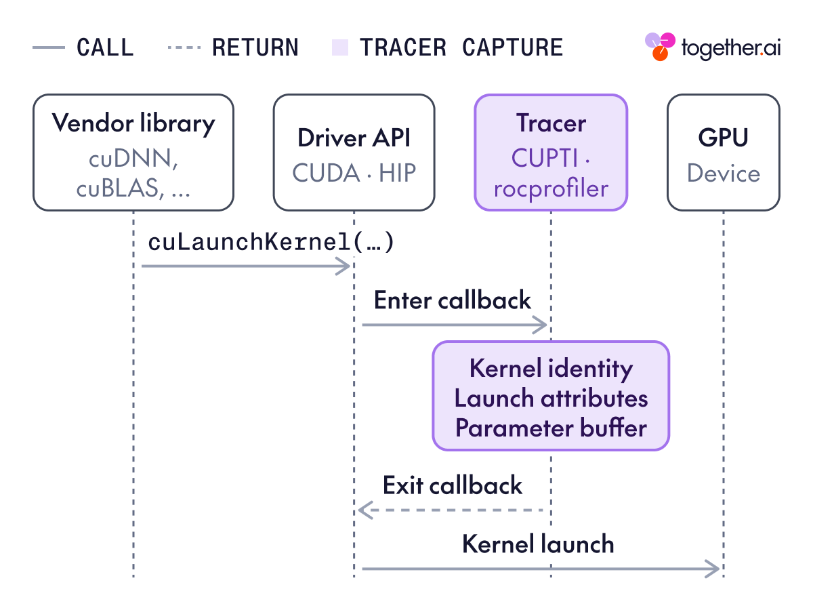
BlockIR: Since the FX graph couldn’t show us all kernels, we built our own capture system that went a level lower to the driver. All kernels pass through the driver’s launch call, regardless of where it comes from. By using low-level tracing tools, such as CUPTI on Nvidia and rocProf on AMD, we captured each kernel launch and parameter buffer. We replaced raw GPU pointers with symbolic references that could be traced back to their corresponding arguments in the Python or C++ source at runtime. Because we captured from a live inference engine, every launch also came with the real inputs it ran on.
This captured information was useful, but difficult for agents and humans to interpret. As a result, we next subclassed PyTorch’s TorchDispatchMode, and tracked every argument declaration and allocation, mapping the raw captured pointers back to readable variables within the source code. At the end of this re-mapping, we ended up with our BlockIR (shown below) – an intermediate representation that tracked every kernel and argument in the forward pass and provided the agent with a structured mechanism to reason about the arguments and parameters for kernel launches.
While this worked well, we encountered challenges when letting agents optimize from the BlockIR view and serving agent outputs on production traffic:
As the BlockIR tracked every pointer in every launch, all optimizations had to maintain that tracking. This requires care for optimizations like kernel fusion, which changes the surviving set of arguments across the two kernels. Thus, fusion requires a mapping of every byte of the new kernel’s argument buffer back to the launches it replaced. This was straightforward when arguments were cleanly typed (a single int, pointer, or bool) but vendor kernels can pass arbitrary argument structures that our capture system had no visibility into. When an argument was a struct, all we had was an opaque buffer of bytes that we had to decompose and associate with known allocations.
Even identifying pointers in the first place was fragile. PyTorch’s caching allocator reuses the same address for many tensors within a single layer, so to name each pointer, we lined up our hook’s launch timestamps against PyTorch’s allocator history. However, as the two are stamped by different clocks, slight discrepancies could lead to bugs. On GLM 5.3 on AMD these clocks drifted by up to 325 µs, dating pointers to the wrong allocation and mislabeling what buffers a kernel was actually reading or writing.
While these issues were addressable, we found that agents were spending more time debugging pointer tracking than identifying optimizations. We decided to simplify. Observing the improvements in the latest frontier models as well as quality of context compaction, we tasked our agents with directly generating the forward pass. No capture system, no BlockIR, just source code. While a detailed IR might still be important in some cases (e.g., for agents to reason about formal verification), we found that optimizing the forward pass source code directly was incredibly effective!
Agents now had access to source code modifications and real-data measurements, but like most agentic optimization systems, we assumed they still needed structured guidance. We built an expert-curated knowledge hub, prescribed data structures for agents to log findings and experiments, and created curated optimization strategies to guide the agents (e.g., ranking optimization targets using a roofline cost model or wall-clock measurements and instructing agents to focus on top-ranked targets first).
Each of these choices helped at some point during development. However, as coding agents rapidly improved, we revisited our assumptions. Ablating each choice over time, we found that the scaffolding we built to guide agents could now surprisingly constrain them. While these ideas are not incontrovertibly bad, agents are sensitive to the structure and context they’re given, and a fine line exists between helpful and harmful. We discuss concrete examples below:
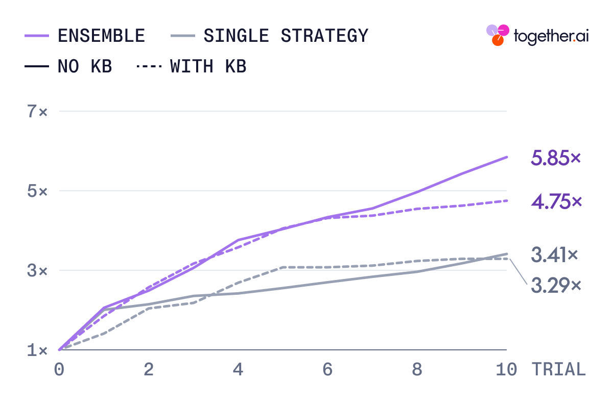
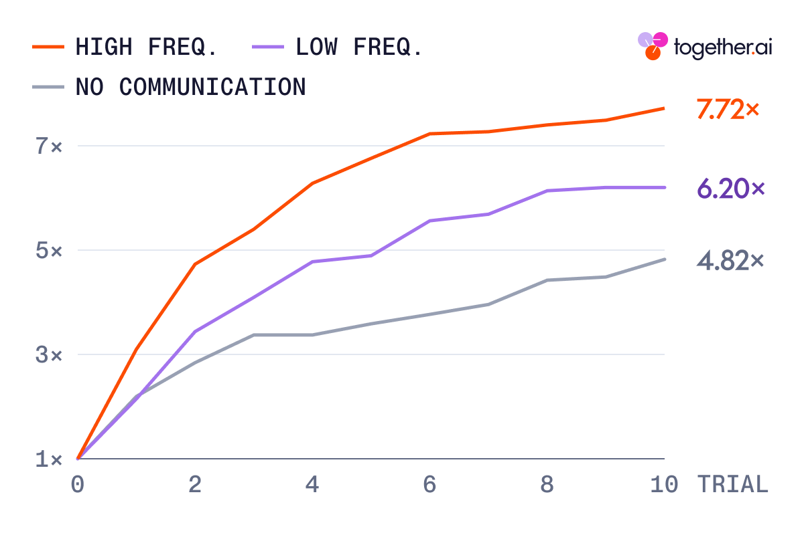
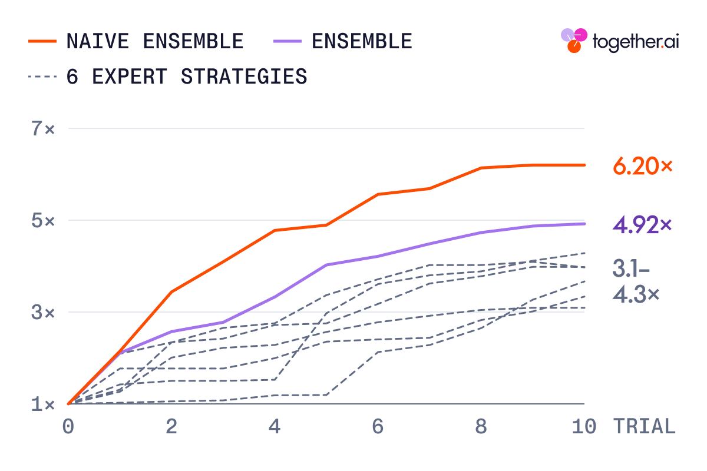
Knowledge base: Speedup over the baseline across 10 agent trials on MiniMax-M3 layer 3 (B200, TP4, batch size 1). Adding a knowledge base lowers the ensemble's final speedup from 5.85× to 4.75× (−19%) and barely changes a single strategy. Communication: Agents that message each other often reach 7.72× over the baseline, vs 6.20× with infrequent communication and 4.82× with none. Expert strategies: The naive ensemble (6.20×) beats an ensemble built from six expert-written strategies (4.92×) by 26%; the six strategies on their own finish between 3.1× and 4.3×.
After stripping away these structures, what remained was a minimal system focused on two things: providing agents with high-fidelity measurements and ensuring high agent experimentation throughput. You can read much more about how we did this through our Tiered Persistent Engine in our earlier blog post.
This minimal system is what powers Together Compiler today. In less than 24 hours, on no more than two nodes, TKCC:
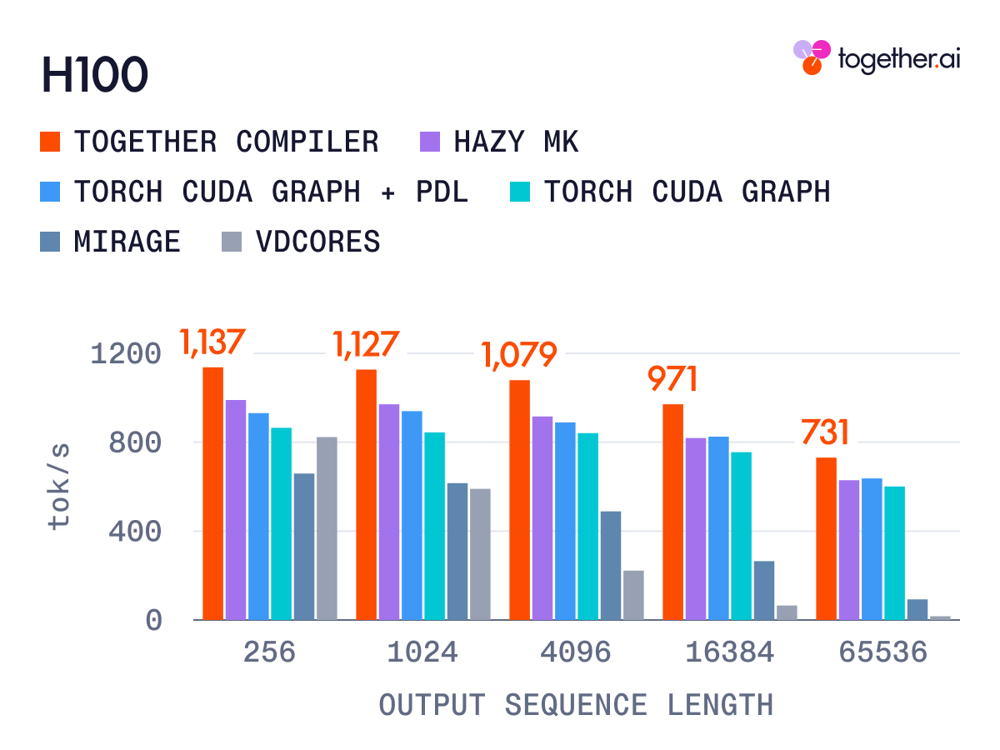
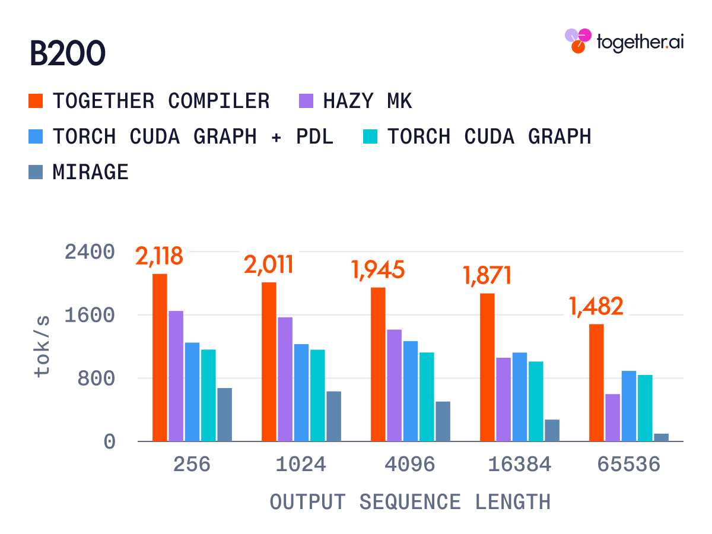
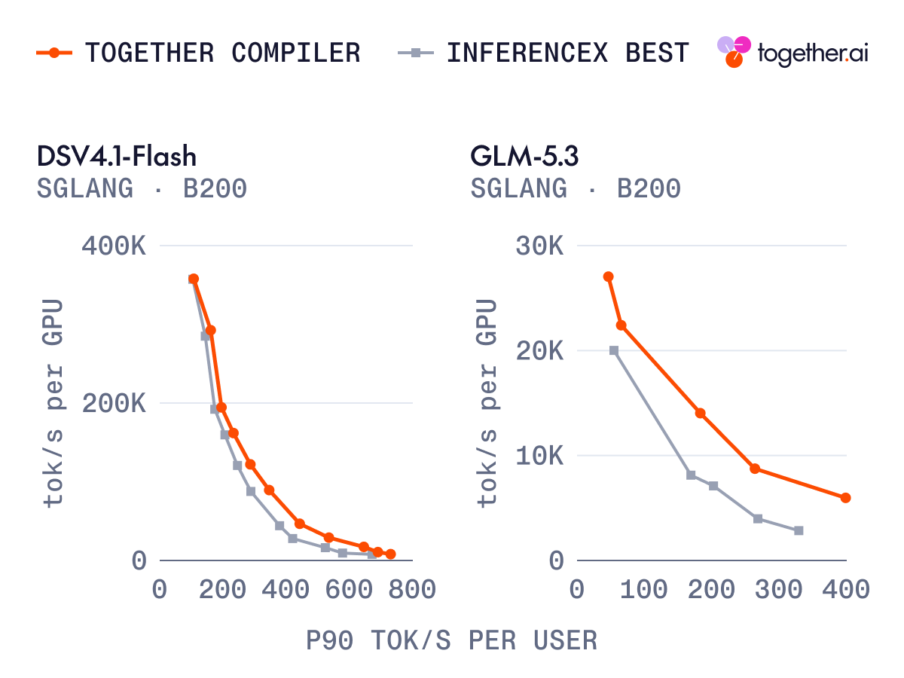
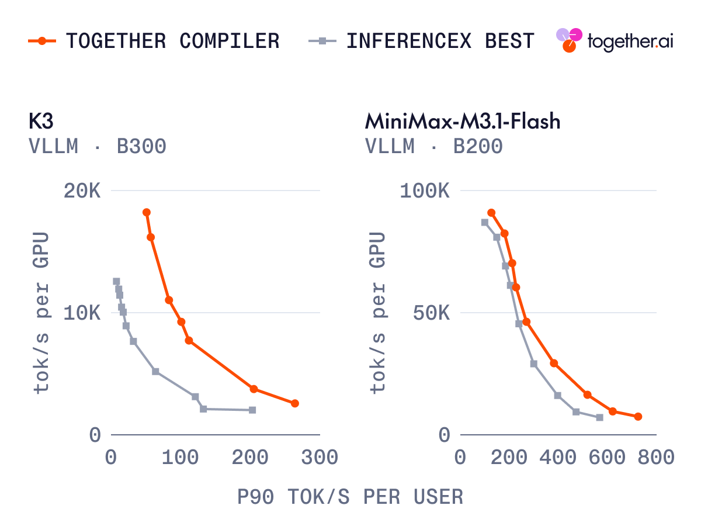
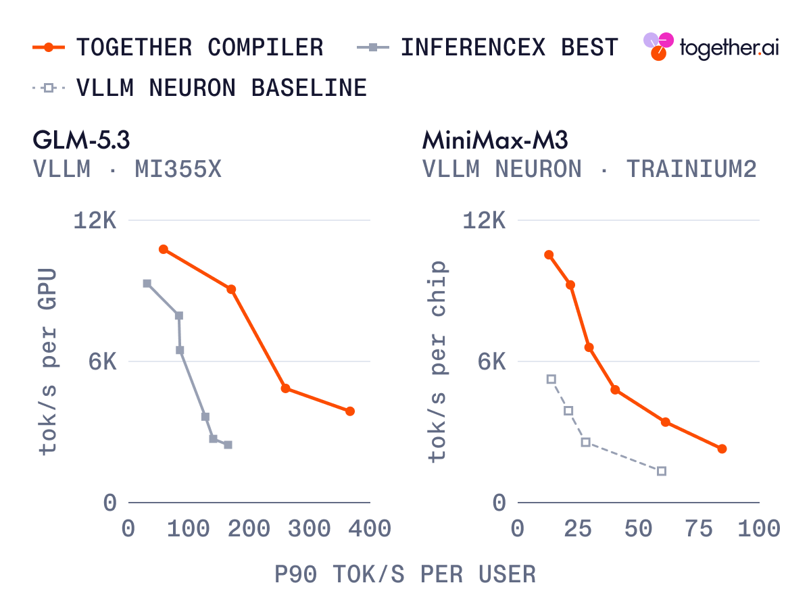
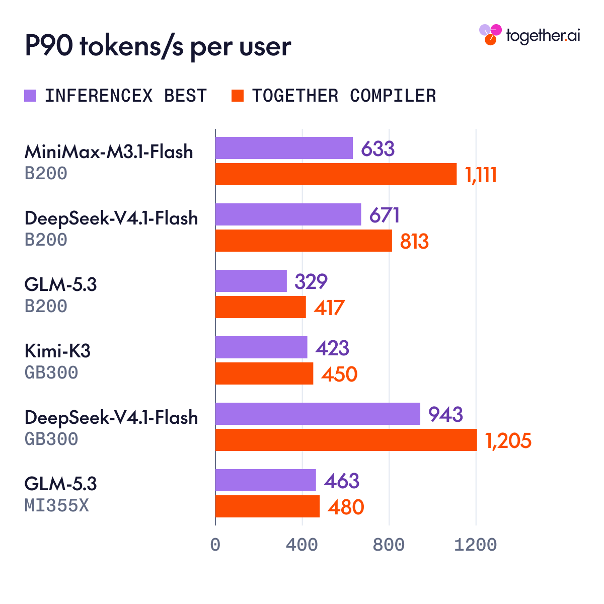
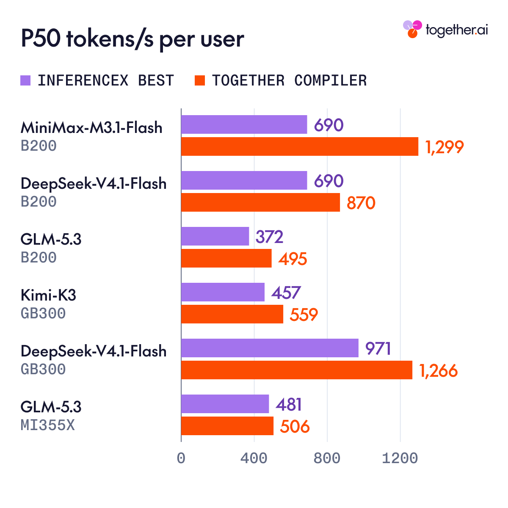
Driving TKCC from a traditional rule-based compiler to the agent-driven optimizer of today was a long road, but three lessons stood out. First, optimizations require high-fidelity measurements, and the wrong benchmarking choices (such as using random data) can lead to suboptimal kernel selection. Second, there is no one-size-fits-all kernel. The right optimizations vary across models, hardwares, and workloads and monolithic strategies cannot represent this space. Third, systems that build around agents should keep model improving capabilities in mind. Agents are sensitive to the scaffolding they are given, and frameworks that help early on can later become constraints.
If your organization would like to try out the Together Compiler, please reach out for early access! And the research team is hiring, please reach out on our careers page!